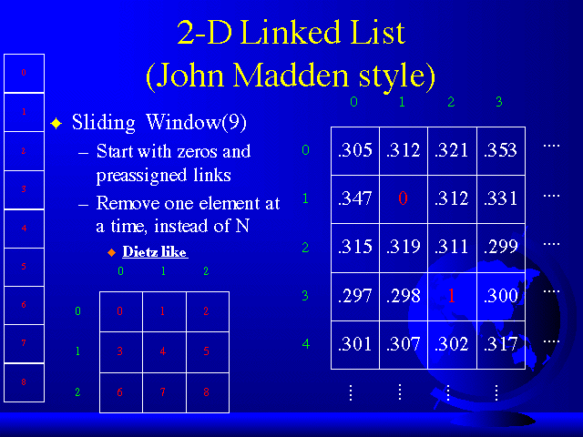

Digital Image Basics and 2 Dimensional Linked Lists

Digital Image Basics
As most of us know, digital images are represented by pixels. A pixel is a dot of color that has a binary representation. If your computer has 1 bit color, then you can display black and white. If your computer has 2 bit color, then your monitor can display 4 colors. At such low bit depths, color isn't really concievable, grayscale color (or grays) is (are) possible. The bit depth is a power of 2, as most electrical engineers are very familiar with. If you have 8 bit color (grayscale), you can display 256 colors (grays) at once on your monitor. If you have 16 bit color, you can display 65536 colors at once on your monitor. If you have 24 bit color, you can display 16.77 million colors on your monitor, which is more colors than most human beings can distinguish. Human beings are really not capable of distinguishing between more than 256 grays. So you rarely see 16 bit grayscale, and if you do, chances are the pictures will look identical in 8 bit grayscale. You want to have at least 16 bit color in order to do Digital Image Processing, even if you are dealing with just grayscale images. The problem with 8 bit color is that when you view an image, somewhere in memory there is a specific colormap allocated to just that picture. There are also other colormaps (standard colormaps) in memory for windows, background colors, menu bars, etc. So, there may be colors "running" around that you didn't even consider. If you open two images on the screen, two separate colormaps are allocated for them, EVEN IF THEY ARE THE SAME IMAGES! There are ways around this, where that computer can "approximate" colors from one standard colormap, but then those colors may be inaccurate. Your safest bet is to get lots of VRAM (Video RAM).
Digital Image Representation
Images are represented by assigning a certain value to each pixel in a matrix that represents the picture. With grayscale images, the values are usually between 0 and 1. Black would be zero, white would be one, and everything in between would be a gray shade. Grayscale images can be represented by any interval of numbers. Zero through one is very common.
Color images are represented in several different ways. One common way is to represent each pixel as a whole number between, say, 0 and 255, and another colormap matrix. For example, if the number was 46, this 46 would represent element number 46 in the colormap matrix. This colormap element would then have the corresponding Red, Green, and Blue (RGB) values for the pixels with the number 46. Color images can also be represented by seperate R, G, B matrices, where pixel (9,5) would have a value of red from R(9,5), a value of green from G(9,5), and a value of blue from B(9,5).
There are numerous ways to represent color images (HSV, HSI, YIQ, CMY, etc.), I only deal with greyscale images. Median filters for color images are difficult depending on how the impulsive noise was induced. But regardless, Color Digital Image Processing opens up another world.
2 Dimensional Linked Lists
No, don't run away! Yeah, one dimension was hard enough to follow, but TWO DIMENSIONS IS EXACTLY THE SAME AS ONE DIMENSION, at least to the computer. I used the same C code for a two dimensional median filter, as I did for a one dimensional median filter, with only a little modification. I 2-D"ized" my 1-D code. Lets take a look at a 2 dimensional example.

The long vertical window on the left is our sliding window with N=9, as opposed to the 1 dimensional example where N=5. If we imagine our long 9 element window as a square, or a 3 x 3 window (middle image), we can think of the long sliding window as a psuedo-window. Basically, what we want is to take a pixel, and it eight neighbors around it, and find the median of those 9 values. Write that median to an output file, and then slide the psuedo-window one pixel to the right. So now, the psuedo-window is centered on the pixel to the right of the previous pixel, and now it contains the new pixel's eight neighbors. Find the median of those values, write it to a file, and slide the window to the right. Repeat the process.
Essentially, I used the exact same code as in the 1 dimensional case.
- Imagine the psuedo-window with all zeros initially defined (as in the 1 dimensional case), and you want to add in pixel(0,0)=.305 (Matrix on right of slide), you read .305 into the psuedo-window at element 0 (in red), compare it to the old median (in this case predefined as zero in element 4), sort .305 in the list, and put the new median to MEMORY. Repeat.
- Remove psuedo-window ELEMENT 3 (in red), break links, read pixel(1,0)=.347 into element 3, sort it, get the new median to MEMORY. Repeat.
- Remove psuedo-window ELEMENT 6 (in red), break links, read pixel(2,0)=.315 into element 6, sort it, WRITE THE NEW MEDIAN TO A FILE.
- Remove psuedo-window ELEMENT 1, break links, read pixel(0,1)=.312 into element 1, sort it, get the new median to MEMORY.
- Remove psuedo-window ELEMENT 4, break links, read in pixel(1,1)=0 (an impulse in this example), sort it, get the new median to MEMORY.
- Remove psuedo-window ELEMENT 7, break links, read in pixel(2,1)=.319, sort it, WRITE THE NEW MEDIAN TO A FILE.
- Remove psuedo-window ELEMENT 2, break links, read in pixel(0,2)=.321, sort it, get the new median to MEMORY.
- Remove psuedo-window ELEMENT 5, break links, read in pixel(1,2)=.312, sort it, get the new medain to MEMORY.
- And finally, remove psuedo-window ELEMENT 8, break links, read in pixel(2,2)=.311, sort it, WRITE THE NEW MEDIAN TO A FILE.
Now notice, that last median was the median of the upper-left 9 pixels of the image. If we keep repeating the same algorithm (Go back to removing psuedo-window element 0), then we can find the median of the 9 neighborhood square of pixels. By writing every SQRT(N)th median to a file, we will always get the correct median value to the output file. Of course we have those initial (SQRT(N) - 1) median zeros going to a file, but a few lines of code would fix that.
Basically, the code is the same algorithm as it was for one dimension. The computer doesn't know the difference, it's just working with numbers. that I salvaged the same code as 1-D, and instead of removing the WHOLE "left-most" column at a time (Which would require removing SQRT(N) elements at a time, and trying to keep track of those links) I just removed the column one row at a time.
As in the one dimensional case, we also lose rows and columns. Because if we tried to center the 3 x 3 psuedo-window on pixel(0,0), five of the elements would be outside the image and would be meaningless. If we were to designate them zeros, then the median of the corners of image would be zero, though the picture would look rounded off. So, we just ignore the top and bottom (SQRT(N)-1)/2 rows, and left and right (SQRT(N)-1)/2 columns. Within images of 100's of columns wide and 100's of rows tall, this is negilible. Most programs just add in the orignal(noisy) (SQRT(N)-1)/2 edges, so that the image is the same size afterwards. Mine doesn't due to time constraints.
After the SQRT(N) x SQRT(N) (3 x 3 in this case) psuedo-window (To be referred to as a window from this point on) reaches the end of the row (ie. All the way to the right), the process starts all over from the leftmost edge of the image, with the window incremented down one row.
tassone@bucknell.edu